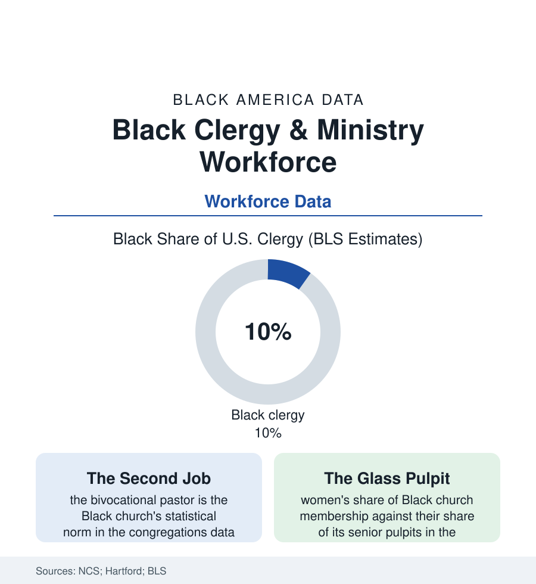

Black Employment
The Clergy: Ministry as Work in Black America
The Black church is one of the largest employers in Black America — and its pastors are among its most bivocational, least pensioned workers. The clergy file.

The Black church appears in this atlas as faith, as politics, as social insurance — and it is also, in the plain employment sense, a workplace: tens of thousands of congregations employing pastors, musicians, administrators, custodians, and teachers, in one of the largest employment systems Black America owns outright. The clergy who lead it are about a tenth of the nation's ministers in the labor data, and their working conditions hold some of the workforce file's most distinctive rows. This article reads the clergy file.
The Economics of the Pulpit
The congregations research draws the structure: the median Black congregation is small (the National Congregations Study's counts — dozens of regular participants, a budget in the low tens of thousands), and its pastor's compensation follows the arithmetic — the full-time, salaried, benefited pastorate the exception outside the large churches, the bivocational pattern the rule: the pastor who teaches school all week, who retired from the plant or the post office into the pulpit, whose parsonage-and-love-offerings package the denomination's yearbooks record in a vocabulary (anniversaries, appreciation days) that is itself a compensation system, the congregation's gratitude monetized in annual ceremonies the data on clergy income must know how to count. The institutional church adds the upper tiers (the megachurch's executive staff, the denominational bureaucracies' salaried officers, the church-owned enterprises' managers) and the pension file beneath (the historic denominations' retirement boards — among the oldest Black financial institutions in the business file — against the independent churches' pastors aging without any plan at all in the clergy surveys' most anxious rows: the retirement gap of the people who bury and marry everyone else). The musicians and the staff fill the middle (the minister of music a distinct labor market with its own circuits and conventions in the ethnomusicology data; the church secretary and the Christian-school teacher — the church as the neighborhood's employer of educated Black women across the whole century of the employment file, a fact the occupational tables record without ever quite saying). The position's history explains its weight in the occupational tables: through the segregated century the pastor was, with the teacher, one of the only full-time Black professionals a Southern town was permitted — educated, salaried by Black money, accountable to a Black constituency — which made the pulpit the community's leadership ladder and its labor market's summit in a single office, a concentration whose effects on the clergy file's prestige and its politics the historians still measure.
The Calling's Costs and Ceilings
The workforce's strain data are their own literature: the clergy-health studies (the Duke Clergy Health Initiative's findings — pastors' chronic-disease and depression rates running above the populations they serve, the obesity and hypertension files of this atlas's health section overrepresented in the pulpit itself, the vocation's boundaries dissolved by design: the pastor is never off) and the succession data's new anxiety (the seminary enrollments of the education file — Black divinity students carrying the student-debt file's worst ratios into the workforce's lowest-paid profession, the pipeline thinning in the mainline denominations' counts even as the independent and non-denominational ordinations grow outside every yearbook's reach). The ceiling data are gendered with a clarity the file must state plainly: Black women are the Black church's majority in the pews (roughly two-thirds in the survey data) and a small minority in its senior pulpits, the ordination maps varying by denomination in the Hartford data — the Pentecostal and Baptist traditions' restrictions against the AME and CME's longer, still-contested inclusion — the women clergy who do lead building, disproportionately, the independent ministries of the storefront file's new generation. And the profession's forward curve runs through the attendance data of the faith file itself: the younger cohorts' loosening affiliation repricing the clergy labor market from the demand side, the working pastor of 2050 likelier, on every trend in the file, to be bivocational, digitally gathered, and employed by a congregation that looks less like the century-old institution the yearbooks count.
Reading the Clergy Data
Ministry is the workforce Black America designed for itself — its employer of first resort for its educated class across the segregated century, its safety net's administrator, its orators' guild. Its data carry the design's costs in the plainest rows: the second jobs, the thin pensions, the unshared pulpits. The labor bureau counts the clergy. The anniversary offering, counted out in the fellowship hall, is the congregation's annotation.
More in Black Employment
The Black Unemployment Rate: The Two-to-One Pattern
Black unemployment runs at roughly twice the White rate — 5.5 percent against 3.3 percent in annual averages — a ratio stable across five decades of federal data. How it is measured and why it persists.
Black Median Weekly Earnings: The 80-Cent Ratio
Black full-time workers earn a median of about $900 a week — roughly 80 cents for every dollar White workers earn. The BLS earnings data by group, gender, and occupation.
Black Labor Force Participation: Working at National Rates
Black labor force participation runs at roughly the national rate — and Black women participate at higher rates than White women. The BLS participation data.
Source: Duke University National Congregations Study; Hartford Institute for Religion Research; U.S. Bureau of Labor Statistics clergy data; denominational yearbooks (AME, COGIC, National Baptist conventions).